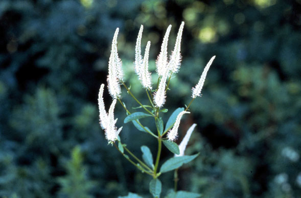
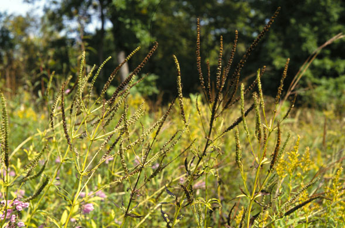
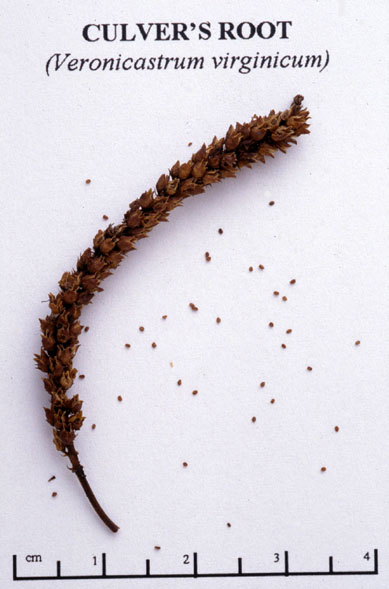

Veronicastrum Virginicum
Family: Scrophulariaceae
Culver's Root
Swink/Wilhelm #7


Click to view larger photo
FLOWERING: July to late August
SEED TIMING: Mid-September to mid-October
HABITAT: Wet mesic to wet prairie. Also in savannas
DIAGNOSTIC FEATURES: 2 - 7 feet. Tall, graceful plant grows erect. Stout smooth stems may be somewhat branched at the top. Leaves are slender ovals with pointed tips up to 6 inches long and occur mostly in whorls of 3 to 9. Margins have fine, sharp teeth. White flowers occur on slender, spikes that are usually 3 to 9 inches long. There are 1 to 9 flower heads per plant.
TO PICK: Ripe flower spikes turn black and mealy. Seed pods zip right off.